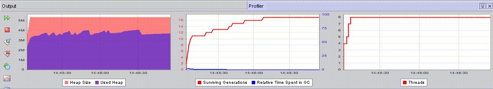
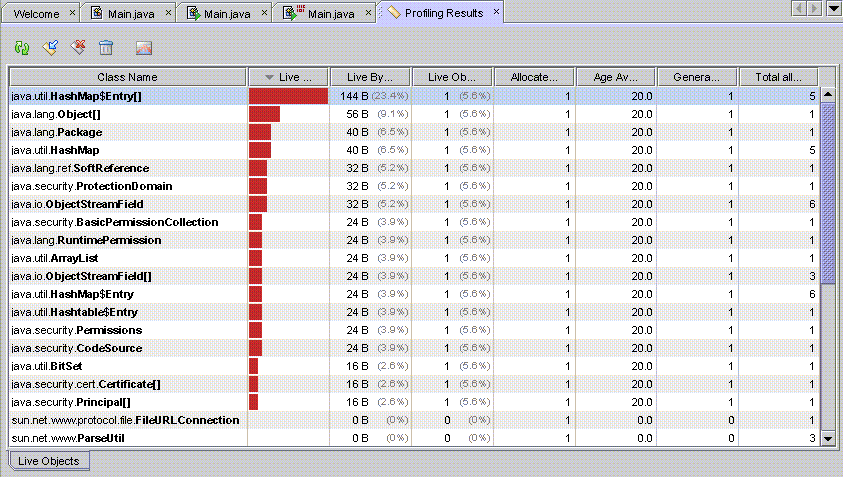
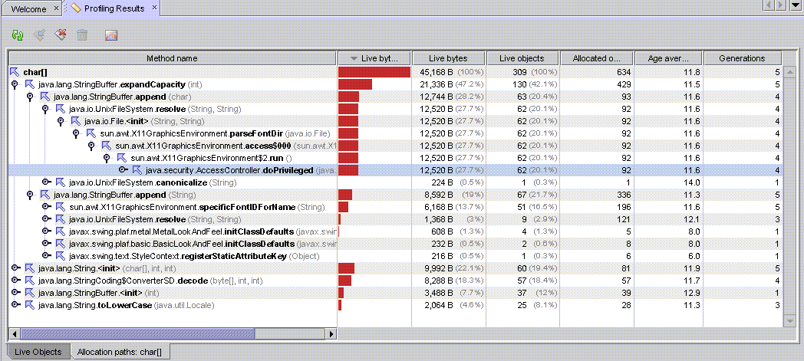
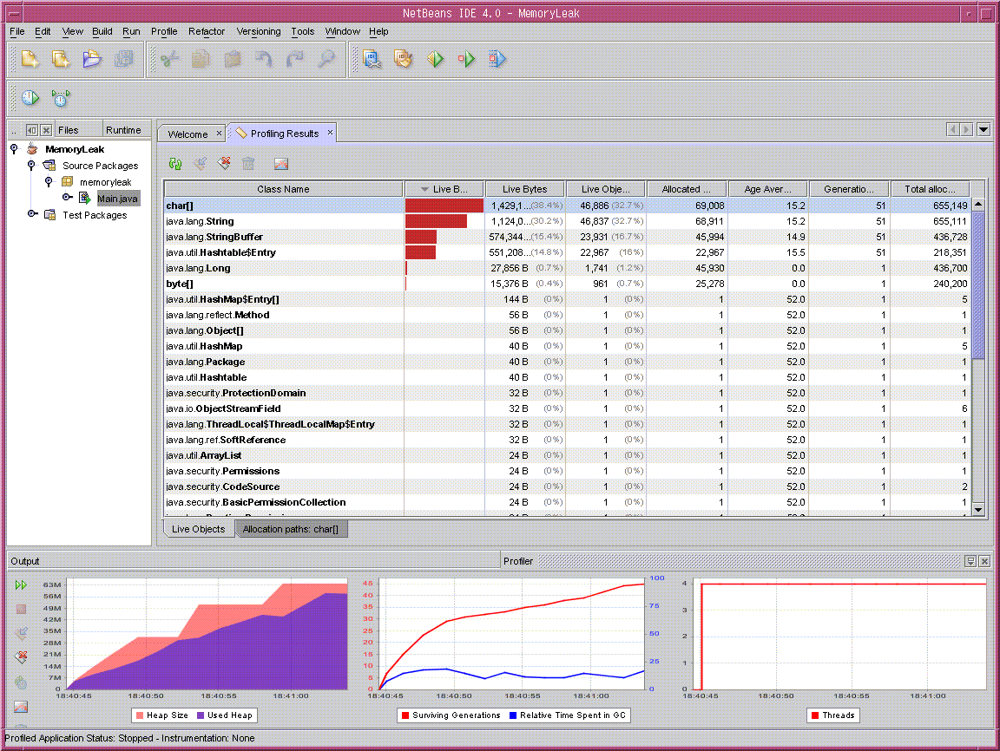
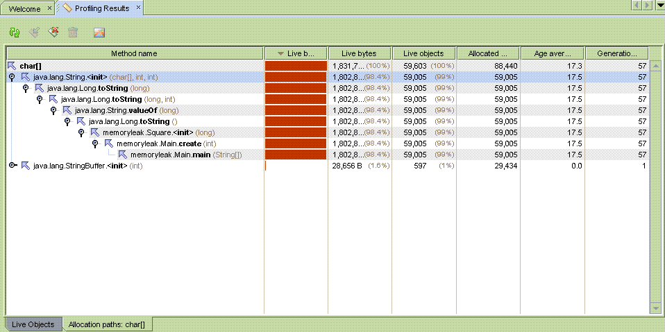
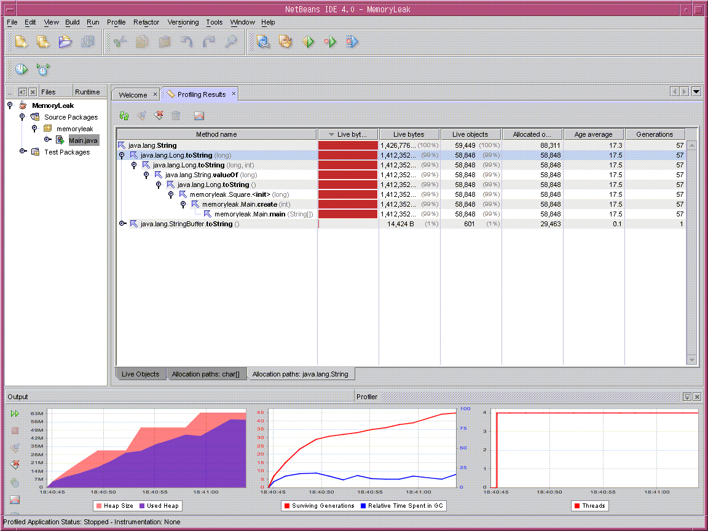

O perfilador NetBeans tem base na tecnologia de perfilamento conhecida como Jfluid desenvolvida pela Sun. Eu gosto da Jfluid. Ela me ajudou a detectar o vazmento de memória e gargalos de desempenho em diversos aplicativos Java. A tecnologia Jfluid está sendo integrada ao NetBeans. Mas podemos testá-la com o NetBeans 4.0. Neste artigo irei usar a versão Profiler Milestone 3. Gostaria de compartilhar minha experiência de como ela ajuda os desenvolvedores a aprimorarem seus aplicativos. Somente posso lhe mostrar a porta. Você terá que fazer isso por si só.
Caso não conheça o Perfilador do NetBeans, visite primeiro o seguinte URL. Há diversos documentos sobre como configurar o Perfilador.
Aqui estão os princípios para detectar questões de vazamento de memória com o Perfilador. A detecção de vazamento de memória é feita pelas seguintes etapas.
Com completo as etapas acima com o Perfilador? Podemos verificar isso ao examinar os diversos gráficos do Perfilador.
Primeiro, vamos examinar a janela 'Perfilador" que está localizada na parte inferior da janela NetBeans. A figura na esquerda é o gráfico do tamanho do heap e o heap usado. Então, você pode ver como o tamanho do heap e o heap usado mudaram durante a execução de seu aplicativo. Se o heap usado estiver aumentando ao longo do tempo, possivelemente então tem um problema de vazamento de memória.
A figura acima explica sucintamente como o JVM usa a memória. Neste caso, o heap usado no gráfico na esquerda é relativamente estável. Porque ele não continua a crescer ao longo do tempo.
A seguir, vamos examinar o gráfico da memória para ver qual objeto está ocupando a maior parte da memória. No campo 'Bytes ao-vivo', o gráfico mostra o tamanho da memória usado por cada objeto. O campo 'Bytes ao-vivo' representa o número de objetos que estão no heap JVM. De acordo com os mesmos, nós podemos ver qual objeto ocupa a memória. Examine também o campo "Gerações". As 'Gerações' representam o número de gerações sobreviventes. Se os objetos de uma classe continuam a ser alocados ao longo do tempo e não são liberados, o numero de "Gerações" continuará a crescer. Esta é uma situação típica de vazamento de memória e o campo lhe fornecerá esta informação.
No exemplo do 'Gráfico de memória de objetos ao-vivo' acima, HashMap$Entry ocupa mais área de memória. No entanto, o número no campo "geração" é baixo. É difícil concluir se há vazamento de memória. Nós precisamos executar o aplicativo por mais tempo para monitorar o uso da memória.
Caso haja qualquer objeto suspeito, então examine o gráfico de chamada reversa. Ele nos ajuda a ver onde estão alocados os objetos que estão ocupando a memória. Ele nos fornece idéias sobre o que examinar em nosso código Java.
A figura acima mostra um gráfico de chamada reversa do objeto 'char'. O gráfico indica que o 'char' está alocado no método StringBuffer.expandCapacity(int). Com o gráfico de chamada reversa, é possível especificar onde o objeto em questão está alocado. Então, examinamos o código em-linha no local.
Permita-me apresentar um estudo de caso de detecção do problema de vazamento de memória com o Perfilador. O Perfilador do NetBeans tem a funcinalidade de perfilar a longevidade do objeto (registrar a criação do objeto e a coleta de lixo). Ele irá mostra as estatísticas de alocação e desalocação de objetos para ajudá-lo a detectar qualquer questão de memória.
Para demonstrar a detecção de vazamento de memória com o Perfilador, use o seguinte código de amostra.
[Código de amostra TestHash]
/*
* Main.java
*
* Created on 2005/01/06, 11:00
*/
package memoryleak;
import java.util.*;
import java.io.*;
/**
*
* @author root
*/
public class Main {
Hashtable hashtable = new Hashtable();
Square sq[] = new Square[10];
/** Creates a new instance of Main */
public Main() {
}
/**
* @param args the command line arguments
*/
public static void main(String[] args) {
// TODO code application logic here
Main testhash = new Main();
for(int i=0; i<100000; i++) {
testhash.create(i);
testhash.use(i);
testhash.release();
}
}
// Create Square objects.
void create(int i) {
for(int j=0; j<10; j++) {
long index = j+i*10;
sq[j] = new Square(index);
hashtable.put(sq[j].num, sq[j]);
}
}
// Use Square objects.
void use(int i) {
for(int j=0; j<10; j++) {
System.out.print(((Square)(hashtable.get(sq[j].num))).square + " ");
}
System.out.println();
}
void release() {
for(int j=0; j<10; j++) {
sq[j] = null;
}
}
}
class Square {
String num;
String square;
public Square(long num) {
this.num = new Long(num).toString();
this.square = new Long(num*num).toString();
}
}
Assuma que o código funcione da seguinte forma, apesar de já ter notado o problema neste código de amostra. :)
Finalmente, libera os objetos Sqaure, portanto, parece não haver uma questão de vazamento de memória.
Agora vamos executar o código de amostra. Caso não haja problemas, ele deveria exibir o quadrado de números de 1 a 999999. Aqui está o resultado da execução.
[Resultado da execução]
0 1 4 9 16 25 36 49 64 81
:
snip
:
179411544900 179412392041 179413239184 179414086329 179414933476
179415780625 179416627776 179417474929 179418322084 179419169241
Exception in thread "main" java.lang.OutOfMemoryError
Infelizmente, o aplicativo foi terminado devido a execção de OutOfMemoryError.
Porque o aplicativo de amostra terminou devido ao OutOfMemoryError? Podemos imaginar que o aplicativo exauriu a heap JVM por seu OutOfMemoryError. No entanto, como e qual objeto causou este erro?
Este é o momento de usar o Perfilador do netBeans. Ele perfila a alocação e desalocação de novos objetos. Para executar o Perfilador, selecione a classe principal do aplicativo na janela Explorer e escolha Perfilados -> Arquivo do perfilador...
A seguir, escolha Analisar o uso da memória. Escolha Registrar os objetos e coleta de lixo.
O aplicativo está sendo executado com o Perfilador. Para ver os resultados da estatística, escolha Perfilador -> Obter os resultados atuais. Na primeira etapa, examine a janela 'Perfilador' na parte inferior da janela inteira. No gráfico do heap na janela 'Perfilador', podemos ver que o tamanho do heap usado (cor lilás) continua a crescer. Portanto, há uma possibilidade de problema de vazamento de memória.
[Imagem dos resultados atuais]
|  |
| Toda a janela Netbeans |
A seguir, examine o Gráfico de memória de objetos ao-vivo na figura acima. Há quatro objetos que ocupam a maioria da memória. Eles são char[], String, Hashtable$Entry e Square. Examine também o campo "Gerações" na figura acima. Este campo representa essencialmente a indicação de um vazamento de memória. Se este número estiver aumentando consistentemente, significa possivelmente a existência de um vazamento de memória. Os quatro objetos têm um número maior no campo Gerações. Eles são 51. Por contraste, os outros são 1. Devido ao número maior, suspeita-se que eles não foram corretamente liberados e causaram o vazamento de memória.
Agora vamos examinar o gráfico de chamada reversa do objeto 'char', que está no topo da lista. Isso pode ser feito ao clicar duas vezes no item de objeto 'char'.
[Gráfico de chamada reversa para char ]
|  |
| Toda a janela Netbeans |
De acordo com o gráfico de chamada reversa, parece que alguns objetos 'char' foram criados no String.<init>, mas nunca forma liberados. Como o 'char' foi criado no Square.<init>, ele tem o mesmo número nos campos 'Objetos ao-vivo' e 'Objetos alocado'. Agora vamos examinar o gráfico de chamada reversa do objeto 'String'.
[Gráfico de chamada reversa para String]
|  |
| Toda a janela Netbeans |
Há uma situação similar ao 'char'. Alguns dos objetos 'String' foram criados no Long.toString(), mas não foram liberados. O 'String' criado no Long.toString() tem o mesmo número dos objetos Ao-vivo e Alocados. Por quê estes objetos nunca foram liberados? A pista está na lista de objetos ao-vivo. Na lista 'Hashtable.O objeto $Entry' também tem um campo Gerações mais alto. 'Hashtable.$Entry' está vivo até que Hashtable.remove() seja chamado. E 'Hashtable.$Entry' tem objetos que estão armazenados na Hashtable. Portanto, podemos suspeitar que os objetos que estão armazenados na Hashtable não foram apropriadamente liberados.
A seguir, vamos voltar para o código-fonte do programa de amostra.
[Amostra do código-fonte]
void release() {
for(int j=0; j<10; j++) {
sq[j] = null;
}
}
Bom! Agora estamos bem perto da causa raiz. Os objetos 'Square' estão corretamente definos como 'null'. No entanto, parece que esquecemos de liberar os objetos 'Square' na Hashtable. A Hashtable tem você. Podemos ver que um objeto'Square' tem um objeto 'String'. O objetos 'String' em objetos 'Square' parecem permanecer no heap. Para solucionar esta questão, modifique o método 'liberar' no código-fonte da seguinte forma.
[Código-fonte modificado]
void release() {
for(int j=0; j<10; j++) {
hashtable.remove(sq[j].num); /* added */
sq[j] = null;
}
}
Vamos executar o programa de amostra corrigido.
[Resultado]
0 1 4 9 16 25 36 49 64 81
:
snip
:
999980000100 999982000081 999984000064 999986000049 999988000036
999990000025 999992000016 999994000009 999996000004 999998000001
Nossa, nós vemos que o programa de amostra terminou sem erros. Com a funcionalidade de monitorar o uso da memória, o Perfilador do NetBeans permite examinar em detalhes a causa do problema de vazamento de memória.
Eu apresentei uma metodologia e um estudo de caso do Perfilador NetbBeans para detectar questões de vazamento de memória. Teste o Perfilador do NetBeans mais recente. Ele irá ajudá-lo a analizar questões de memória no JVM. Que o Perfilador do NetBeans esteja convosco.
{kind=link}
{kind=link}
{kind=link}
{kind=link}
{kind=link}
{kind=link}
{kind=link}